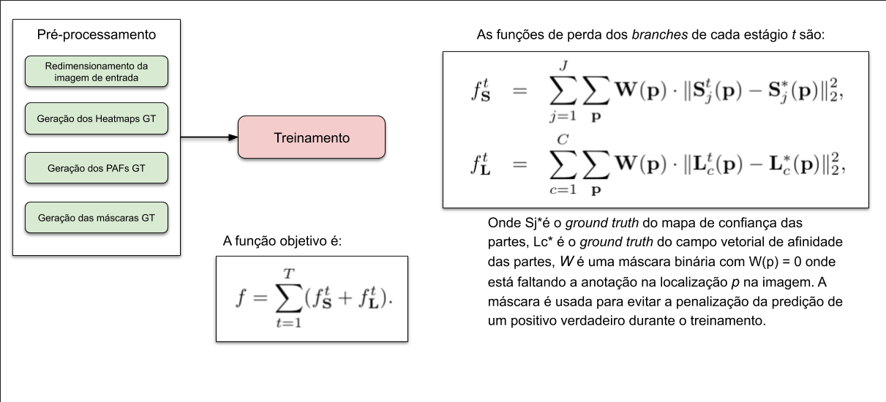

Human Pose Estimation
Djalma Lúcio
Luiz Schirmer
Image Processing for Vision and Graphics 2020
Agenda
- Visão Geral
-
2D Human Pose Estimation
- Server/Desktop (OpenPose)
- Web (PoseNet)
- Mobile (BlazePose)
-
TensorPose
- TensorPose: Real-time pose estimation for interactive applications
- A lightweight 2D Pose Machine with attention enhancement
- Semantic graph convolutions with attention enhancement applied to pose estimation and computer animation
Visão Geral
Introdução
Pose Estimation é um dos problemas tratados em Visão Computacional, onde são detectadas a posição e orientação de um objeto. Isso geralmente significa detectar os locais dos keypoints que descrevem o objeto.
A tarefa
Desafios
- Cada imagem pode conter um número desconhecido de pessoas que podem estar em qualquer posição e escala.
- As interações entre as pessoas normalmente gera interferência, devido ao contato e oclusão, dificultando a realização da associação das partes.
Segurança
Essa tecnologia não reconhece quem está em uma imagem, isto é, não há informações pessoais identificáveis associadas à detecção de pose. O algoritmo está simplesmente estimando onde estão as principais articulações do corpo.
Abordagens
A tarefa de detectar e localizar os keypoints de diversas pessoas em uma imagem é realizada através das seguintes abordagens:
- Top-Down
- Bottom-Up
Abordagem Top-Down
A abordagem comum para estimar a pose é empregar um detector de pessoas, e então, para cada pessoa detectada, realizar a estimativa da pose. Esta abordagem é conhecida como abordagem top-down. Um dos principais problemas com esta abordagem ocorre quando o detector de pessoas falha, sendo assim não há como recuperar as informações necessárias (os keypoints) para a estimativa da pose.

Todos as pessoas são detectas, para depois o keypoints serem detectados e feitas as ligações entre eles
Abordagem Bottom-Up
Na abordagem bottom-up as partes são detectadas para todas os pessoas de uma única vez, sendo assim, não sofre o problema ocasionado pelo detector de pessoas.

Todos os keypoints são detectados e em seguida são feitas as ligações entre eles
Aplicações
A estimação de pose tem muitos usos, desde instalações interativas que reagem ao corpo até realidade aumentada, animação, usos de condicionamento físico e muito mais; tais como:
Playing Beat Saber in the browser with body movements using PoseNet & Tensorflow.js
OpenPose
Multi-Person Pose Estimation
using Part Affinity Fields
Zhe Cao, Shih-En Wei, Tomas Simon, Yaser Sheikh
Carnegie Mellon University
Visão Geral
Jointly Learning Parts Detection and Parts Association
Arquitetura
Arquitetura
Parts detection
Inferência
Pós-processamento
- NMS
- Bipartite Graphs
- Line Integral
- Weighted Bipartite Graphs
- Assignment Algorithm
- Connections
- Merging

Pós-processamento
Non-maximum suppression
Para determinar a localização dos keypoints em coordenadas de pixel, é necessário executar o algoritmo non-maximum suppression (NMS):
- Inicie no primeiro pixel do heatmap
- A partir deste pixel crie uma janela 5x5 e identifique o pixel com valor máximo dentro dessa janela
- Substitua o valor do pixel central por este valor máximo
- Deslize um pixel da imagem com essa janela e repita o processo até completar todo o heatmap
- Compare o heatmap gerado com o original.
- Os pixel que continuam com o mesmo valor são picos que procuramos.
- Atribua o valor 0 aos demais pixels

Pós-processamento
Bipartite Graphs
- Now that we have found the candidates for each candidate of the body parts, we need to connect them to form pairs.
- So, what we have, is a complete bipartite graph, where the vertices are the part candidates, and the edges are the connection candidates.
- Finding the best matching between vertices of a bipartite graph is a well-known problem in graph theory known as the assignment problem.
- In order to solve it, each edge on the graph should have a weight.
Pós-processamento
Line Integral
This is where PAFs enter the pipeline.
- We will compute the line integral along the segment connecting each couple of part candidates, over the corresponding PAFs (x and y) for that pair.
- The line integral will give each connection a score, that will be saved in a weighted bipartite graph and will allow us to solve the assignment problem.
Pós-processamento
Assignment
The weighted bipartite graph shows all possible connections between candidates of two parts, and holds a score for every connection. The mission now is to find the connections that maximize the total score, that is, solving the assignment problem.
- Sort each possible connection by its score.
- The connection with the highest score is indeed a final connection.
- Move to next possible connection. If no parts of this connection have been assigned to a final connection before, this is a final connection.
- Repeat the step 3 until we are done.
Treinamento
Pré-processamento
Redimensionamento da imagem de entrada
Como entrada o modelo necessita de uma imagem com resolução de 368x368 pixels, sendo assim, é necessário escalar a imagem para estas dimensões.
Pré-processamento
Geração dos mapas de confiança GT
Como a saída do modelo é composta pelos mapas de confiança para cada um dos 18 keypoints, então, é necessário a geração destes mapas ground truth para cada pessoa anotada na imagens.
Pré-processamento
Geração das máscaras GT
A geração da máscara GT é necessária para evitar que o algoritmo seja "penalizado" por encontrar mais keypoints do que está anotado no dataset.
Treinamento
COCO Dataset 2017
IMAGENS
- Imagens para treinamento: 118k
- Imagens para validação: 5k
- Imagens para teste: 41k
- Imagens não rotuladas: 123k
- Assists in loading, parsing, and visualizing annotations
- Python, MatLab e Lua
250k instâncias de pessoas rotuladas com keypoints
Body keypoints
PoseNet visão geral
PoseNet é um modelo de machine learning usado para fazer a estimação de pose de pessoas em tempo real no navegador usando o TensorFlow.js.
Esta seção apresenta uma visão geral do modelo. Mais informações podem ser encontradas no repositório do projeto PoseNet no github e no post Real-time Human Pose Estimation in the Browser with TensorFlow.js
O modelo PoseNet possui os modos de execução single-pose e multi-pose.
Isto significa que ele pode ser usado para estimar a pose de somente uma única pessoa ou a pose de múltiplas pessoas
em uma imagem ou vídeo.
Single-pose
A detecção de um única pessoa é mais rápida e mais simples. Esse modo é ideal para o caso onde somente há uma pessoa no centro da imagem ou vídeo.
A desvantagem deste modo é que se houver múltiplas pessoas na imagem, os keypoints de todas as pessoas serão estimadas como se fossem da mesma pessoa. Por exemplo, o braço esquerdo da pessoa nº 1 e o joelho direito da pessoa nº 2 podem ser confundidos pelo algoritmo como pertencendo à mesma pose.

Algoritmo executado no modo single-pose
Multi-pose
O algoritmo de estimativa de pose para várias pessoas é mais complexo e um pouco mais lento que o algoritmo de pose única.
Contudo, tem a vantagem de que, se várias pessoas aparecerem em uma imagem, é menos provável que os keypoints detectados estejam associados à pose errada.
Outra vantagem é que o desempenho não é afetado pelo número de pessoas na imagem de entrada. Isto é, se houver 15 pessoas para detectar ou 5, o tempo de computação será o mesmo.

Algoritmo executado no modo multi-pose
Como funciona
A estimação de pose ocorre em duas fases:
- Uma imagem RGB é utilizada como entrada para a CNN do modelo
-
Tanto no modo single-pose quanto no multi-pose, a saída do modelo é decodificada, obtendo-se:
- as poses detectadas
- o score de confiança das poses detectadas
- a posição dos keypoints
- o score de confiança dos keypoints
Pose
O modelo PoseNet retorna um objeto de pose que contém uma lista de keypoints e um score de confiança para cada pessoa detectada.
Score de confiança do keypoint
Determina a confiança de que a posição estimada do keypoint é precisa.
Seu valor varia entre 0.0 e 1.0.
Este valor pode ser usado para ocultar keypoints que não são considerados precisos o suficiente.
Keypoints
Cada keypoint é uma parte da pose estimada de uma pessoa,
como nariz, orelha direita, joelho esquerdo, pé direito, etc.
Nele está contida sua posição e o seu score de confiança.
Atualmente, o modelo PoseNet detecta 17 keypoints.

PoseNet visão técnica
Processo de estimação
A imagem ao lado ilustra o processo de estimação da pose. Existem duas versões do modelo PoseNet, uma delas foi treinada usando como backbone a MobileNet V1 e a outra a ResNet 50.
A versão com a ResNet possui maior precisão, contudo ela é bem maior e possui muitas camadas, o que torna mais lento o carregamento da página.
Sendo assim, a versão com MobileNet é a ideal para as aplicações de tempo real que irão rodar em dispositivos móveis e computadores menos potentes.

Output stride
O modelo PoseNet é invariante com relação ao tamanho da imagem, isto significa que ele pode estimar a pose independente da escala da imagem.
Sendo assim o modelo pode ter sua precisão aumentada apenas configurando, em tempo de execução, o parâmetro output stride. Lembrando que aumentar a precisão diminui o desempenho.
O parâmetro output stride determina o quanto a saída será diminuída em relação ao tamanho da imagem de entrada. Este parâmetro influencia no tamanho dos layers da rede e das saídas, e na precisão.
O output stride pode ser configurado com os valores 8, 16 ou 32. Com o valor 32, o desempenho aumenta porém a precisão diminui. Já com o valor 8 a precisão aumenta mas o desempenho diminui.
heatmaps & offset vectors
As saídas do modelo PoseNet são um heatmap e um offset vector que devem ser decodificados para que seja encontrada a área da imagem onde há a maior probabilidade de haver keypoints da pose estimada. Isto significa que os keypoints da pose estimada estão associados a um tensor para heatmap e um tensor para o offset vector.
Tanto o heatmap quanto o offset vector são tensores 3D com uma determinada altura e comprimento que são referenciadas como resolução. A resolução é definida através do tamanho da imagem e do valor do parâmetro output stride.
Resolution = ((InputImageSize - 1) / OutputStride) + 1
// Example: an input image with a width of 225 pixels and an output
// stride of 16 results in an output resolution of 15
// 15 = ((225 - 1) / 16) + 1
heatmaps
Cada heatmap é um tensor 3D de tamanho resolução x resolução x 17, onde 17 é o número de keypoints detectados pelo PoseNet.
Por exemplo, uma imagem com tamanho de 225 e output stride de 16, resultará em um tensor de 15x15x17. Cada fatia corresponde a um específico keypoint no heatmap. Cada posição no headmap possui um score de confiança, o qual é a probabilidade que o keypoint existe naquela posição.
Ela também pode ser vista como a imagem original sendo dividida em um gride de 15x15, onde os scores do heatmap fornecem uma classificação da probabilidade de cada keypoint existir em cada quadrado do gride.
offset vectors
Cada offset vector é um tensor 3D de tamanho resolução x resolução x 34, onde 34 é o número de keypoints vezes 2.
Por exemplo, uma imagem com tamanho de 225 e output stride de 16, resultará em um tensor de 15x15x34. Sabendo que os heatmaps são um aproximação de onde os keypoints estão, os offset vectors correspondem, em localização, aos pontos do heatmap, e são usados para fazer a predição da localização exata dos keypoints.
Nas primeiras 17 fatias do offset vector estão os valores da coordenada x e as últimas 17 fatias estão os valores da coordenada y.
Estimando a pose
Depois que a imagem é processada pelo modelo, alguns cálculos são realizados para estimar a pose a partir das saídas.
Por exemplo, no modo single-pose é retornado o score da confiança da pose, o qual contém um array de keypoints, indexados pelo ID da parte, cada um contendo o score da confiança e as coordenadas x,y da posição.
Para obter os keypoints da pose:
-
Aplica-se uma ativação sigmoid no heatmap para se obter os scores
scores = heatmap.sigmoid() -
É aplicado o argmax2d no score de confiança do keypoint para obter os índices x e y
no heatmap com o maior score de cada parte, ou seja é essencialmente onde a parte existe.
É retornado um tensor de tamanho 17x2, onde cada linha dele estão os índices y e x do heatmap.
heatmapPositions = scores.argmax(y, x)
-
O offset vector de cada parte é recuperado ao usar os índices x e y retornados
pelo objeto offset que usa os índices x e y correspondentes no heatmap para a parte.
Por exemplo, para a parte k, quando a posição no heatmap for x e y, o offset vector é:
offsetVector = [offsets.get(y, x, k), offsets.get(y, x, 17 + k)] -
Para obter o keypoint, os índices x e y do heatmap de cada parte são multiplicados pelo output stride
e depois adicionado ao seu offset vector correspondente, que está na mesma escala da imagem original.
keypointPositions = heatmapPositions * outputStride + offsetVectors - O score da confiança de cada keypoint é o score da posição do seu heatmap. E o score da confiança da pose é a média dos scores dos keypoints.
PoseNet - Bibliotecas
P5.js + ML5.js
p5.js
O p5.js é uma biblioteca JavaScript com foco em tornar a codificação acessível e
inclusiva para artistas, designers, educadores, iniciantes etc.
O p5.js usa a metáfora de sketch, possuindo um conjunto completo de funcionalidades para desenhar.
Mas ele não está limitado somente ao canvas, ele também oferece suporte aos diversos objetos do HTML5,
como texto, input, vídeo, câmera e som.
ml5.js
A biblioteca fornece acesso aos algoritmos e modelos de machine learning no navegador,
com base no TensorFlow.js sem outras dependências externas.
A biblioteca fornece diversos exemplos de código e tutoriais.
O ml5.js é fortemente inspirado no Processing e no p5.js, como informado no post
ml5: Friendly Open Source Machine Learning Library for the Web
Pose Tracking
No projeto Pose Tracking
é utilizado o modelo
PoseNet
para detectar a pose das diversas pessoas,
e para o rastreamento e identificação de cada pose detectada é utilizado o algoritmo
Centroid Tracking.
O código-fonte encontra-se disponível no
github do projeto.
Centroid Tracking
A implementação do algoritmo Centroid Tracking neste trabalho é uma conversão para Javascript
da implementação em Python encontrada e explicada com detalhes no post
Simple object tracking with OpenCV.
Esse algoritmo é chamado de Centroid Tracking, pois se baseia na distância euclidiana entre
(1) centróide de objeto existente, ou seja, objetos que o algoritmo já havia visto antes e
(2) novos centróides de objeto entre frames subsequentes em um vídeo.
O algoritmo é processado em várias etapas conforme apresentado a seguir.
Etapa 1: Obter as coordenadas do bounding box e calcular os centróides
A cada frame o algoritmo recebe as coordenadas da bounding box de cada objeto detectado no frame.
Estas bounding boxes são geradas a partir das coordenadas dos keypoints detectados pelo modelos PoseNet.
Estas coordenadas são utilizadas para calcular o centróide, ou seja, o centro da bounding box.
Como esse é o conjunto inicial de bounding boxes apresentado ao algoritmo, então, nesse momento,
são criados os identificadores únicos dos objetos.
Bounding boxes usadas para calcular os centróides
Etapa 2: Cálculo da distância Euclidiana entre as novas bounding boxes e os objetos existentes
Em cada frame subsequente é aplicada a Etapa 1 para calcular os centróides dos objetos; contudo,
ao invés de atribuir um identificador único para cada objeto detectado,
primeiro é verificado se é possivel associar o centróide de um novo objeto (em amarelo)
com o centróide de um objeto antigo (em rosa).
Para realizar este processo, é calculada a distância Euclidiana (setas verdes)
entre cada par dos centróides dos objetos existentes e os centróides dos objetos de entrada.
Distância Euclidiana calculada entre os centróides existentes (vermelho) e os novos (verde)
Etapa 3: Atualizando as coordenadas do objetos existentes
A principal suposição usada pelo algoritmo Centroid Tracking é de que, provavelmente,
um objeto irá se mover entre os frames subsequentes, mas a distância entre os centróides
nos frames Ft e Ft+1
será menor do que todas as outras distâncias entre os objetos.
Portanto, se optarmos por associar os centróides com distâncias mínimas entre
os frames subseqüentes, teremos o tracking dos objetos.
O algoritmo associando centróides que minimizam suas respectivas distâncias euclidianas.
Etapa 4: Registrando novos objetos
No caso em que houver mais detecções de entrada do que
objetos existentes sendo rastreados, é necessário registrar o novo objeto.
"Registrar" significa simplesmente que o novo objeto será adicionado à lista de objetos rastreados,
realizando as seguintes ações:
- Atribuindo um novo ID de objeto
- Armazenando o centróide das coordenadas da bounding box para esse objeto
Após feito o registro, a Etapa 2 é executada e o pipeline é repetido para cada frame no stream de vídeo.
A figura demonstra o processo de usar as distâncias euclidianas mínimas para associar IDs de objetos existentes e, em seguida, registrar um novo objeto.
Passo 5: Cancelar o registro de objetos antigos
Qualquer algoritmo de rastreamento de objeto razoável precisa ser capaz de lidar com a perda,
o desaparecimento ou a saída de um objeto do campo de visão.
A maneira exata de lidar com essas situações depende realmente de como o tracker de objeto é implementado.
Nesta implementação, o registro de objetos antigos é cancelado quando eles não puderem corresponder
a nenhum objeto existente para um total de N frames subsequentes.
BlazePose
Real-time Body Pose Tracking On-device
Pipeline
The solution utilizes a two-step detector-tracker ML pipeline.
- Using a detector, the pipeline first locates the pose region-of-interest (ROI) within the frame.
- The tracker subsequently predicts the pose landmarks within the ROI using the ROI-cropped frame as input.
Note that for video use cases the detector is invoked only as needed
- For the very first frame and when the tracker could no longer identify body pose presence in the previous frame.
- For other frames the pipeline simply derives the ROI from the previous frame’s pose landmarks.
Pipeline
Human pose estimation pipeline overview.
Tracking Model
- first employ a heatmap and offset loss to train the center and left tower of the network.
- then remove the heatmap output and train the regression encoder (right tower)
- thus, effectively using the heatmap to supervise a lightweight embedding.
Tracking network architecture: regression with heatmap supervision
Topologia
BlazePose 33 keypoint topology as COCO (colored with green) superset
Topologia
Vitruvian man aligned via two virtual keypoints predicted by BlazePose detector in addition to the face bounding box.
Topologia MediaPipe
MediaPipe Pose predicts the location of 25 upper-body landmarks (see figure below), each with (x, y, z, visibility).
Note that the z value should be discarded as the model is currently not fully trained to predict depth.
Desempenho